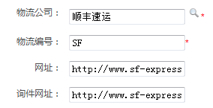

OCS初始化数据手册
在系统部署完成后,需要对系统进行初始化,为后面正是运营提供准备,初始化工作主要包括:
- 系统参数初始化配置
- 支付方式相关配置
- 前端店铺相关配置
- 订单异常类型相关配置
- 售后问题类型相关配置
- 第三方仓储相关配置
- 物流公司相关配置
- 仓库相关配置
- 管理员相关配置
- 订单自动设置相关配置
- 系统数据清除
依次点击“系统工具—基本设置—系统设置”，此菜单为系统基本参数配置页面
注: "i"鼠标移动到该图标上方，会出现相应的解释说明。
- 仓库设置
- 根据实际情况，选择是多仓库还是单仓库。但是当系统中的仓库数量大于一个时，不可切换为单仓库。
建议:根据企业自身情况配置
- 订单失效时间设置
- 订单失效时间是针对未支付的非货到付款订单的一个属性，从订单的下单时间开始计算，超过设置时间后订单将被自动取消。
建议:4320分钟(3天)
- API同步日志备份周期
- 与各个前端系统通信的记录称为API同步日志。周期设置天数以上的同步日志将被清除，在系统中将无法查询。
建议:10080分钟(7天)
- 订单未确认的时间设置
- 从订单的下单时间开始计算，设置时间过后仍未被确认的订单系统将会加粗显示，提示操作员优先处理。
建议:1440分钟(1天)
系统本身不存在支付方式，将各个前端店铺使用的支付进行汇总，并与店铺进行关联，供查询。通过系统对前端发起支付和退款请求时，必须使用这个前端店铺支持的支付方式。
依次点击“系统工具—基本设置—支付方式配置”，可以点击“同步支付方式”，将系统现有的支付方式信息进行更新.
建议:设置好前端店铺支付方式(淘宝,拍拍系统会自动默认),点击”同步支付方式”
OCS是帮助卖家管理订单和建设组织架构的业务处理平台，针对多销售前端的电子商务企业，前端店铺的管理是不可或缺的部分。依次点击“系统工具—基本设置—前端店铺管理”
- 添加 - 点击“添加店铺”，进入前端店铺的信息页面
- 店铺编码是前端店铺在系统中的唯一标识，填写后不可更改。
- 名称为前端网店在系统中需要显示的中文名，也是快递单上可打印的店铺名称。
- 地区、地址、邮编、发件人、联系电话等信息是用来打印在快递单中发货信息部分。。
- 网店地址就是店铺的链接地址。
- 点击查看列的箭头可以展开看到店铺的详情
- 绑定店铺 - 添加店铺，只是将店铺的相关信息录入到系统中，并没有与前端店铺实际建立关系。通过绑定来完成这一步骤。
- 点击“申请绑定”，进入店铺绑定界面，按照不同的店铺类型，填写绑定信息
- 网站证书可以在前端店铺的后台进行查询。
- 申请绑定后需登陆前端店铺的后台同意OCS的绑定申请，同时还要向OCS发起绑定申请。双向绑定成功后，才算绑定完成。
- 绑定类型
- 淘宝店铺
- 申请绑定后还需要使用淘宝登录账号进行一次登陆。两次填写的淘宝登录账号必须一致。
- 拍拍店铺
- 关闭库存回写
- 在默认的情况下，系统会将商品的可下单库存值（库存减去冻结库存）回写到各个前端店铺，更改前端店铺该商品的库存值。如果某些店铺有特殊的要求，不需要使用系统统一的可下单库存值的话，可以在“前端回写设置”中关闭对该店铺的库存回写。
建议:打开
在处理订单的过程，会遇到一些突发情况，需要进行线下的沟通或者等待客户答复等，此时，为了避免订单被误操作，可以将订单置为异常。异常的订单在正常处理订单的操作界面都不可见。在将订单置为异常的时候，需要选择异常的类型，异常类型就是对订单异常原因的描述，如：等待退款，等待补货等。
依次点击“系统工具—基本设置—订单异常类型”，点击“添加”按钮来增加订单异常类型。
在商品出售以后，客户由于不同需求会发起退换货请求，为了方便客服处理售后请求，设置了售后问题类型，就是对售后原因的解释，如留言与尺码不符、订单缺货、货品质量等。
依次点击“系统—基本设置—售后问题类型设置”，点击“添加”按钮来增加售后问题类型。
系统可与第三方仓库连接，为了更好的完成接口之间的连接。首先需要对第三方仓库管理进行配置。依次点击“系统—基本设置—第三方仓库管理”
- 添加 - 点击“新建”，进入第三方仓储的信息页面
- 第三方仓储编码为第三方仓储在系统中的唯一标识，填写后不可更改。
- 名称为在系统里的中文名称
- 类型决定了仓储与系统对接的方式。
- 绑定第三方仓储
- 添加第三方仓储，只是将第三方仓储的相关信息录入到系统中，并没有与第三方仓储实际建立关系。通过绑定来完成这一步骤。
- 点击“申请绑定”，进入绑定界面，按照不同的第三方仓储类型，填写绑定信息，网站证书可以在前端店铺的后台进行查询。
- 申请绑定后需登陆前端店铺的后台同意OCS的绑定申请，同时还要向OCS发起绑定申请。双向绑定成功后，才算绑定完成。
依次点击“系统工具—仓库设置—仓库管理”，可以看到系统所有的仓库列表,点击“添加仓库”进入仓库信息设置界面，对仓库进行添加
- 仓库名称为仓库在系统中的中文名称，所有需要显示仓库的地方都会显示该名称。
- 仓库编号为仓库在系统中的唯一标示，在出入库事务中会用到，用来表示这个仓库。
- 仓库的辐射区域是指该仓库指定的配送区域，可以选择全国或指定地区，可精确到三级城市。操作员为订单选择发货仓库的时候系统会根据辐射区域的设置不同而有不同的默认仓库推荐。
- 仓库设置可以选择仓库类型（正仓、售后仓、残仓）。
- 仓库对应店铺决定了店铺的发货仓库。
- 第三方仓储选择决定了仓库所对应的第三方仓储。
- 可以将仓库的其他信息填写完整，方便查询。
外部仓库为非系统仓库，是货物的来源仓，通常为品牌商自己存放货物的仓库。依次点击“系统—仓库设置—外部仓库设置”，点击“添加”，进行外部仓库的新建设置。
物流公司在货物配送过程中占有重要角色。系统提供了物流公司管理功能，大大提高了工作效率。依次点击“系统工具—物流公司管理—物流公司管理”
- 基本信息
- 我们预设了一些常用物流公司的基本信息，可以点击进行选择。物流编号为物流公司的特定标识，前端系统以此来识别物流公司。

- 如果系统中没有找到使用的物流公司，也可以自己添加。
- 系统初始化时,需要对操作员进行设置
- 依次点击“控制面板—管理员和权限—角色管理”
- 依次点击“控制面板—管理员和权限—操作员管理”
- 新建操作员,为操作员增加权限,此管理员将能进行相应的操作
订单收订完成后，会进入订单调度、订单确认流程。系统为客户提供订单确认小组管理功能.
依次点击“系统工具—管理员管理—订单确认小组管理”
已经存在的确认小组会显示在列表中。
一个管理员可以属于多个订单确认小组。
- 依次点击“系统工具—订单自动设置—自动确认订单”，
- 添加规则名称和描述，规则可以通过两个条件来限制对于哪些订单进行自动确认，缺省默认为所有。条件之间是并且的关系。
- 对符合条件的订单执行自动确认，当订单中的所有商品都可以从某个仓库发货时，你可以选择权重最高的仓库，或者收货地址的三级区域包含于仓库设置的地域之中的仓库；在选择物流公司的时候，会在配送范围覆盖了收货区域的物流公司中选择权重最高的。
- 可以针对不同条件的订单添加多条自动确认规则，规则与规则之间是或者的关系。
- 依次点击“系统工具—订单自动设置—自动分派订单”
- 添加规则名称和描述。
- 可以通过两个条件来限制对于哪些订单进行自动分派，缺省默认为所有。条件之间是并且的关系。
- 对符合条件的订单执行自动分派，订单将会被分派到设定的订单确认员。如果确认员为空，表示将订单分派到这个确认小组。
- 可以针对不同条件的订单添加多条自动分派规则，规则与规则之间是或者的关系。
依次点击“系统工具—数据清除—清除数据”，只有超级管理员有权限清除数据，操作将清除系统中除绑定关系外的所有用户数据，操作不可逆。